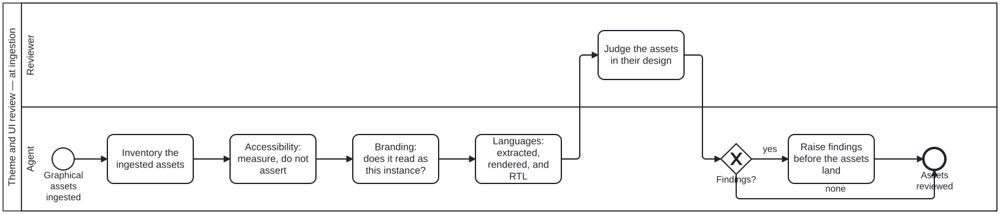

Generated from
cat-harness/skills/ui/ui-core/theme-ui-review.md— do not edit here.
At ingestion, and only at ingestion
The owner, 2026-09-23 and 2026-09-24, settling bean 9fdi:
theme review to ingestion of graphical assets in context of website or app design and determining graphical assets/UI
and, asked directly whether that meant only at ingestion:
Yes only at ingestion
So this skill runs in exactly one place: theme-ui-review.bpmn, called from
ingest-theme.bpmn Task_Review, whose agent lane is ingestion-agent. It is
not called from crdm-deliver.bpmn any more — that call was removed.
This supersedes an earlier ruling, and both are quoted on purpose
On 2026-09-20 the owner said reviewing themes and UI “should be part of post MVP process in SDLC”, and this skill was written around that: it hung off MVP acceptance and reviewed what had shipped. The 2026-09-24 ruling replaces it. Both are kept here because a reader who finds only the older one in some other file would otherwise conclude one of them is an error. Neither is — the later one governs.
What moved, and what did not
The object moved upstream. Post-MVP, the review looked at what shipped, and a finding was a defect in something built. At ingestion it looks at the arriving graphical assets laid out in the design they are for, and the same finding is a decision about what the assets will be, taken while it is still cheap.
The questions did not move. Accessibility measured rather than asserted, branding against the instance’s own declaration, every declared locale — the sections below are unchanged in substance and now apply to the ingested assets.
Theme choice is still an authoring judgement. There is still no
role-to-theme mapping (theme.ts records why), so
nothing here checks a binding. What gets reviewed is the ingested art in its
design context.
What this gives up — accepted, and written down so it stays accepted
A post-build review answered “what did this turn into?” — how a crop reads at 320px in Arabic over a photograph, once it is in the page. An ingestion review answers that only as far as the assets can be laid out in their design before the site exists. That gap is the cost of the ruling. It is recorded here so a later reader who notices it finds it was priced and accepted, not missed — and does not re-add a post-MVP call on their own initiative.
A person is in the loop, inside ingestion
R_Judge is a human step: a person looks at the assets laid out at a web and a
mobile width. Moving the review to ingestion does not remove that person, so
ingesting a theme source is attended at that step. Ingesting anything else
stays unattended — Gateway_ThemeSource in document-ingestion.bpmn routes
non-theme documents past ingest-theme.bpmn entirely.
Measure; do not assert
Contrast is computed, against the real ground. A theme with a backdrop has no single ratio — ink over a photograph varies pixel to pixel — so the number that matters is the worst case the art can present. Every shipped scrim in this repository is measured over pure black for that reason, and the check is written so it can fail: without a case that fails at a thin scrim, passing assertions prove nothing about the value.
Colour is never the sole carrier (SC 1.4.1). Where it carries meaning, look for the second channel — the priority stripe is a width as well as a hue precisely so a monochrome reader still sees it.
An automated pass is necessary and not sufficient, and this is the part that gets skipped. Two measured cases from this repository:
- axe accepts a non-empty placeholder as an accessible name, so a label removed from the accessibility tree passed the automated check and was found by reading the real output.
- A CSS selector that matches nothing raises no error in any tool. One wrong combinator put a backdrop at its intrinsic 1672px across the viewport, with the suite green, every gate green and every request returning 200.
So a person looks at the assets laid out in their design (R_Judge). That is a
step in the diagram, not an optional extra — and those two measured cases are
why it survived the move to ingestion rather than being dropped as “the manual
bit”.
Branding is a question about the INSTANCE, not about taste
Marks, palettes and art are checked against the instance’s own declaration
rather than a remembered style. The sharpest form of the question comes from
downstream: would a folio depending on this platform inherit something it did
not choose? landing.html states it as a rule — “a downstream folio should
not inherit a grumpy cat it did not choose” — and it is why a theme names an
image role rather than a path.
Languages: new UI is where untranslated strings enter
Not because anything went stale, but because nothing was there before. Check
that every user-facing string reaches the .pot, that each declared locale
renders without clipping, and that right-to-left is laid out rather than
mirrored by accident.
The distinction worth keeping: a name is translatable and a value is not. A theme’s display name goes through the pipeline; its palette does not, because a colour is not language-dependent and translating one invites a locale to diverge on a value the CSS must agree on.
Raise findings; do not fix them
A finding goes back to whoever authored the choice, because the choice was
theirs. There is no mapping to correct instead, and a reviewer who quietly
re-themes a note has substituted their judgement for the author’s without saying
so — which is the same objection decision-audit makes to
editing a finding rather than overruling it with a note.
The one exception is the one this repository already allows everywhere: a defect
that is not a judgement call at all — a selector matching nothing, a string
missing from the .pot, a contrast ratio below the floor — is a bug, and bugs
get fixed.
What this does NOT cover
Not the choice itself. Whether a sticky should be engineer or library is an
authoring decision, and this review does not second-guess it; it asks whether
what was ingested will render legibly, consistently and in every declared
language in the design it is for.
Both viewports, always
Owner, 2026-09-23 (issue #1023): “need both web and mobile layouts in usability reviews”.
- Every surface is inventoried and judged at a web width and at a mobile width.
- A review done at one width is incomplete, not passed.
- The surface’s wireframe, in
wireframe-design-review, states what each layout was meant to be, so the review compares the build against an intent rather than against memory.
Processes that run this skill
This skill has its own process: Theme and UI review — at ingestion.

| process | step(s) that name it |
|---|---|
| Ingestion subprocess — ingest a theme | Theme and UI review (calls a sub-process) |
| Theme and UI review — at ingestion | Inventory the ingested assets; Accessibility: measure, do not assert; Branding: does it read as this instance?; Languages: extracted, rendered, and RTL; Raise findings before the assets land |